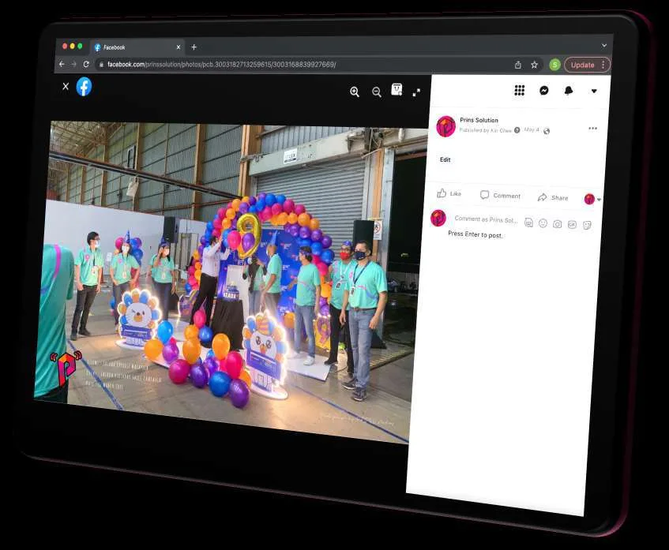

SERVICES | EMPLOYEE ENGAGEMENT & TEAM BUILDING
Engagement events your people actually look forward to.
Family days, team building, festive celebrations, office culture campaigns and gamified engagement — planned, themed and executed end-to-end.
Request a ProposalWhy it matters
Gallup’s latest Malaysia workplace data shows only 25% of employees in Malaysia are engaged at work. Engagement events alone don’t fix culture — but well-designed, recurring programmes give HR teams a practical way to build appreciation, connection and belonging. (Source: Gallup workplace research.)
What we run
- Corporate Family Day — full-scale, themed family days with activities for all ages
- Corporate Team Building Malaysia — team bonding, leadership and communication formats
- Employee Engagement Programmes — office culture campaigns, festive décor and celebration series
- Gamification & Interactive Games — a PRINS differentiator across all formats
- CSR Team Building / Wellness Activities — ESG- and HR-relevant programmes
HRDC-claimable options available through approved partners, subject to programme scope.

Delivered for teams like yours
Agoda “The Agoda Olympics” Family Day
More than 1,500 participants in a sports-festival format covering end-to-end planning, venue management, creative theming and on-ground coordination.
Agoda Winter Wonderland
A Christmas celebration for 1,000 employees across the Southpoint and TRX offices — VR games, live band, glambot, mocktail sessions and more.
Lazada — partner since 2020
Continuous engagement partnership covering annual parties, family days, festive office décor across 4 office levels, and campaign-linked employee programmes.
Engagement — FAQs
Can engagement programmes run as a recurring annual calendar?
Yes. Several clients engage PRINS on a continuous basis for annual parties, family days and festive campaign series throughout the year.
Can activities be customised to our company culture and headcount?
Yes. Every programme is fully customised — theme, activities, venue format and budget — whether for a department or a 1,500-pax organisation-wide event.
Is team building with PRINS HRDC claimable?
HRDC-claimable options available through approved partners, subject to programme scope. Ask us during the proposal stage and we will confirm what applies to your programme.